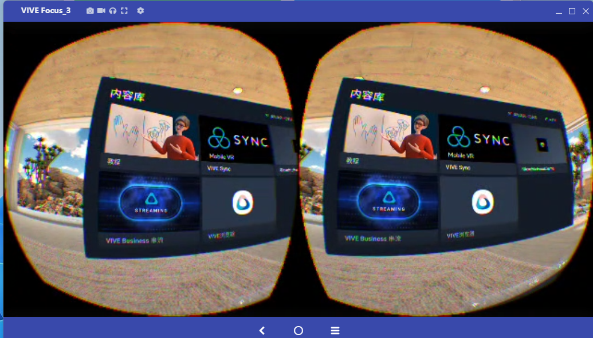
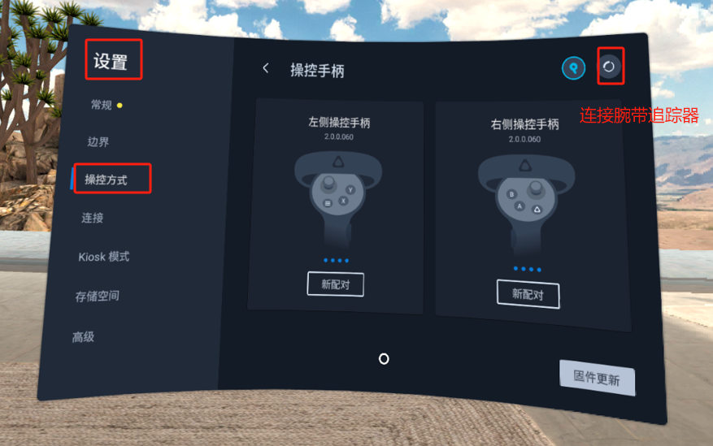
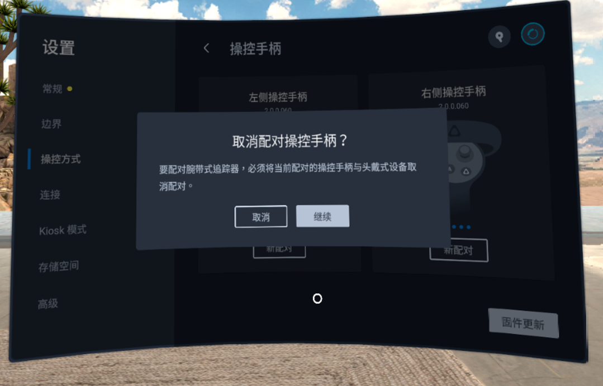
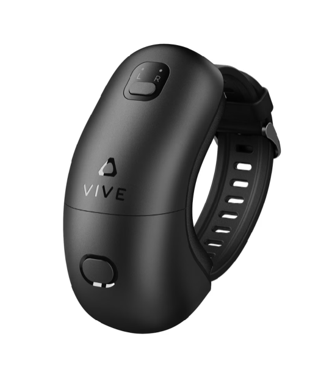
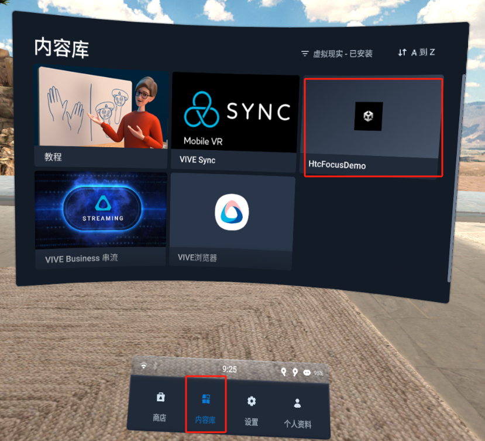
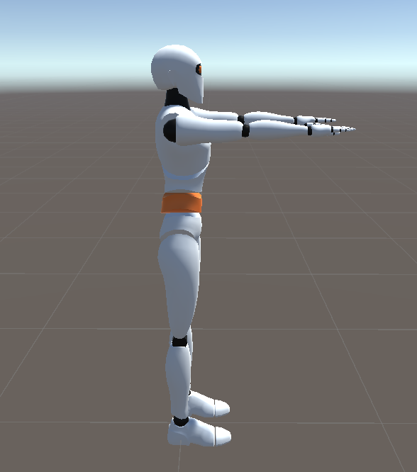
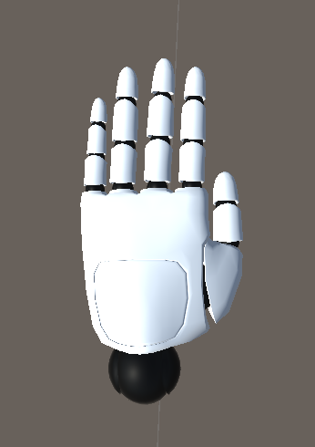
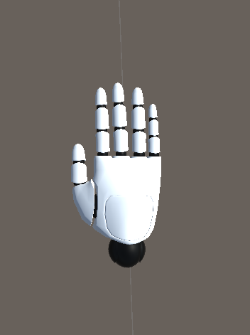

手套结合Focus3
手套+Htc Focus3软件使用文档
- 下载手套软件安装包
文件下载至电脑
+------------------------------------------------------------------------------------------------------------------------------------------------------------------------------------+----------+------------+-----------------------+ | 模块库文件 | 版本 | 日期 | 更新日志 | +====================================================================================================================================================================================+:========:+:==========:+=======================+ | 请至钉钉文档查看附件《MotionCapture_Glove_Focus_1.1.0.apk》 | V1.1.0 | 2024-11-04 | 【新增】 | | | | | | | | | | 1.支持自研手套设备 | +------------------------------------------------------------------------------------------------------------------------------------------------------------------------------------+----------+------------+-----------------------+
- 安装手套软件
2.1下载工具Vysor
请至钉钉文档查看附件《Vysor-win-5.0.7.exe》
2.2安装应用
使用软件Vysor可以方便focus和电脑建立连接，在focus中选择文件传输。然后将MotionCapture_Glove_Focus.apk拖入下方画面中，focus中会自动安装apk软件
{width="7.791666666666667in" height="4.449154636920385in"}
- 使用手套软件
3.1连接腕带式tracker
使用软件前确认连接了两个腕带追踪器，如果连接了手柄需要先断开手柄的连接
设置>控制方式>选择腕带追踪器，然后根据提示连接
{width="5.625in" height="3.5208333333333335in"}
{width="5.635416666666667in" height="3.6145833333333335in"}
{width="5.666666666666667in" height="6.53125in"}
3.2打开软件
在内容库中打开GloveHtcFocusDemo软件。
{width="4.708333333333333in" height="4.291666666666667in"}
3.3软件中使用流程
前置条件，pico中插入了手套接收器，并且两只手套设备已开机。
采集数据
先点击采集数据按钮，看得包率是不是0，如果是0检查手套是否已开机。
如果得包率很低，请至pc软件MotionStudio中切换频段。
姿势校准(需要手朝向靶子方向)
没有上述问题后，点击姿势校准按钮，姿势参考下图。
 {width="6.125in"
height="4.197916666666667in"}
{width="6.125in"
height="4.197916666666667in"}
手臂姿势
{width="6.125in" height="6.9375in"}
手部姿势
{width="1.7916666666666667in" height="2.537331583552056in"}{width="1.9166666666666667in" height="2.5646303587051618in"}
- 画面串流至PC